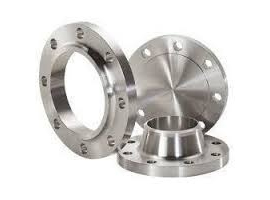
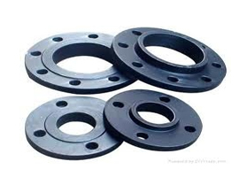
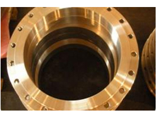
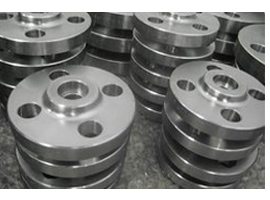
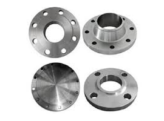
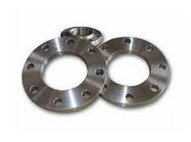
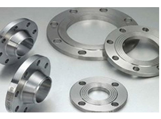

Our Stainless Steel Flanges are of one of the best quality. We have an exclusive range of stainless steel flanges which is of high exclusive quality. Stainless Steel Flanges available in a spectrum of shape and sizes, our forged light weight weld flanges are manufactured using superior grade material such as stainless steel.
RANGE : 15 NB UP TO 600 NB IN 150 LBS , 300 LBS, 400 LBS , 600 LBS , 900 LBS , 1500 LBS , 2500 LBS / TABLE 2.5 , TABLE 6 , TABLE 10, TABLE 16,TABLE 25 , TABLE 40, TABLE 64, TABLE 160, TABLE 320, TABLE 400
FORM : SLIP ON , SOCKET WELD , BLIND , LAPPED , SCREWED , WELD NECK , REDUCING , SPECTACLE ,SLIP ON BOSS , PLATE , PLATE BLANK , SCREWED BOSS.
Grade : ASTM / ASME SA 182 F 304 , 304L , 304H, 309H, 310H , 316 , 316H , 316L , 316 LN , 317 , 317L , 321 , 321H , 347H .

The Carbon & Alloy Steel Flanges offered by us are strictly tested by our experts on various parameters, in order to meet the quality standards. Our Carbon & Alloy Steel Flanges are widely used in various industrial applications. Moreover, these Alloy Steel Flanges are available in different sizes and specifications as per the client’s needs.
RANGE : 15 NB UP TO 600 NB IN 150 LBS , 300 LBS, 400 LBS , 600 LBS , 900 LBS , 1500 LBS , 2500 LBS / TABLE 2.5 , TABLE 6 , TABLE 10, TABLE 16,TABLE 25 , TABLE 40, TABLE 64, TABLE 160, TABLE 320, TABLE 400
FORM : SLIP ON , SOCKET WELD , BLIND , LAPPED , SCREWED , WELD NECK , REDUCING , SPECTACLE ,SLIP ON BOSS , PLATE , PLATE BLANK , SCREWED BOSS.
Standard : ASTM / ASME A/SA 269 / 213 / 249
Grade : ASTM / ASME A 105 , ASTM / ASME A 350 LF 2 / ASTM / ASME A 182 GR F 5, F 9 , F 11 , F 12 , F 22 , F 91

Our range of Nickel flanges are ideal for application in diverse industry for high pressure and temperature applications. These flanges are designed with precision for easy installation. Apart from standard flanges, we also offer custom designed Nickel flanges to meet the specific application requirements of the customers.
Range : 6.35 mm OD upto 254 mm OD in 0.6 TO 20 mm thickness
Type : Seamless / ERW / Welded
Form : Round, Square, Rectangular, Coil, U Tube, Pan Cake.
Length : Single Random, Double Random & Required Length
End : Plain End, Bevelled End
Standard : ASTM / SA 179 / A 210 GR.A / BS 3059 GR.360 & 440
RANGE : 15 NB UP TO 600 NB IN 150 LBS , 300 LBS, 400 LBS , 600 LBS , 900 LBS , 1500 LBS , 2500 LBS / TABLE 2.5 , TABLE 6 , TABLE 10, TABLE 16,TABLE 25 , TABLE 40, TABLE 64, TABLE 160, TABLE 320, TABLE 400
FORM : SLIP ON , SOCKET WELD , BLIND , LAPPED , SCREWED , WELD NECK , REDUCING , SPECTACLE ,SLIP ON BOSS , PLATE , PLATE BLANK , SCREWED BOSS.
Length : Single Random, Double Random & Required Length
Standard : ASTM / ASME SB 564 UNS 2200 ( NICKEL 200 ) , UNS 4400 (MONEL 400 ) , , UNS 8825 INCONEL (825) , UNS 6600 (INCONEL 600 ) , UNS 6601 ( INCONEL 601 ) , UNS 6625 (INCONEL 625) ,UNS 10276 ( HASTELLOY C 276) ASTM / ASME SB 160 UNS 2201 (NICKEL 201 )
ASTM / ASME SB 472 UNS 8020 ( ALLOY 20 / 20 CB 3 )
We are manufacturing a wide range of Hastelloy Flanges which are available to our clients in various grades. Hastelloy Flanges are available in standard as well as customized sizes as per the requirements of our clients.
Size : 1/2"NB to 12"NB
Type : Socket Weld, Slip On, Blind, Lapped, Screwed, Weld Neck, Long Weld Neck, Reducing, Spectacle, Ring Joint
Standard : ASTM, ASME, API, AISI, BS, ANSI, DIN, JIS, MSSP, NACE
Grade : Hastelloy C-22, Hastelloy C-276, Hastelloy C-2000

We offer Inconel Flanges that are widely appreciated for dimensional accuracy, corrosion resistance and optimum strength. Made using quality raw material. Our nickel alloy tubes can also be customized as per the specifications provided by the clients.
Size : 1/2 inch - 48 inch (15mm - 1200mm)
Type : Socket Weld, Slip On, Blind, Lapped, Screwed, Weld Neck, Long Weld Neck, Reducing, Spectacle, Ring Joint
Standard: ANSI/ASME B16.5, ANSI B16.47 API, DIN, JIS, BS
Grades : Inconel 600, Inconel 601, Inconel 625, Inconel 625LCF, Inconel 686, Inconel 718, Inconel 800, Inconel 825, Inconel X-750

We are manufacturing a wide range of Monel Flanges which are available to our clients in various grades. Monel Flanges are available in standard as well as customized sizes as per the requirements of our clients.
Grades :Monel 400, Monel k500Range : 1/2” NB to 60” NB
Types: Socket Weld, Slip On, Blind, Lapped, Screwed, Weld Neck, Long Weld Neck, Reducing, Spectacle, Ring Joint Features :
- Durability
- Corrosion resistance
- Dimensional accuracy
- High strength
- Chemical resistance
- Excellent finish

We are manufacturing a wide range of Monel Flanges which are available to our clients in various grades. Monel Flanges are available in standard as well as customized sizes as per the requirements of our clients.
Grades :Monel 400, Monel k500Range : 1/2” NB to 60” NB
Types: Socket Weld, Slip On, Blind, Lapped, Screwed, Weld Neck, Long Weld Neck, Reducing, Spectacle, Ring Joint Features :
- Durability
- Corrosion resistance
- Dimensional accuracy
- High strength
- Chemical resistance
- Excellent finish
Material : Titanium
Grade : Gr2, Gr5, Gr7, Gr9.
Standards: DIN,ASTM,BS.
Application : Bicycles,Motors,Chemicals.
Description
Standards: DIN,ASTM,BS
Strength :Superior Quality, Fast delivery, Competitive price as well as humanized after-sales service.
Features : Low density, rustless, good antiwear property, high strength.
Size : Set the size according to the customers' requirements.
| Element | Composition,% | |||||
| Gr2 | Gr5 | Gr7 | Gr9 | Gr11 | Gr12 | |
|---|---|---|---|---|---|---|
| N max | 0.03; | 0.05 | 0.03 | 0.03 | 0.03 | 0.03 |
| C max | 0.08 | 0.08 | 0.08 | 0.08 | 0.08 | 0.08 |
| H max | 0.015 | 0.015 | 0.015 | 0.015 | 0.015 | 0.015 |
| Fe max | 0.30 | 0.40 | 0.50 | 0.25; | 0.20 | 0.30 |
| O max | 0.25 | 0.20 | 0.25 | 0.15 | 0.18 | 0.25 |
| Al max | 5.5~6.75 | 2.5~3.5 | ||||
| V max | 3.5~4.5 | 2.0~3.0 | ||||
| Pd max | 0.12~0.25 | 0.12~0.25 | ||||
| Grade | Tensile strength(min) | Yeild strength(min) | Elongation(%) | ||
|---|---|---|---|---|---|
| ksi | MPa | ksi | MPa | ||
| Grade1 | 35 | 240 | 20 | 138 | 24 |
| Grade2 | 50 | 345 | 40 | 275 | 20 |
| Grade3 | 65 | 450 | 55 | 380 | 18 |
| Grade5 | 130 | 895 | 120 | 828 | 10 |
| Grade7 | 50 | 345 | 40 | 275 | 20 |
| Grade9 | 90 | 620 | 70 | 438 | 15 |
| Grade12 | 70 | 438 | 50 | 345 | 18 |
